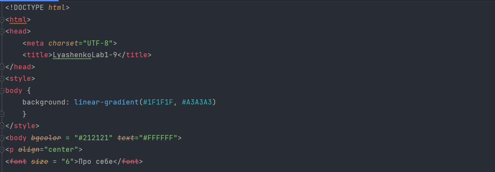
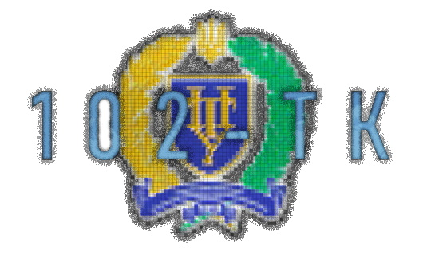

Про себе
Я студент університету Національний університет "Полтавська політехніка імені Юрія кондратюка".
Навчаюсь за спеціальністю 123 "Комп'ютерна інженерія" по освітній програмі бакалавр з ціллю отримання
вищої освіти та отримати гарний та якісний досвід в майбутньому для подальшого розвитку та підйому по кар'єрній сходинці.
Студент групи 102ТК першого курсу.
Я поступив на таку спеціальність тому що мене цікавить програмування, вивчення мов програмування а також комп'ютерна техніка,
яку можна буде ремонтувати.
Обрав я цей університет тому що він надає гарну та якісну освіту, де студенти отримують вищу освіту та залишають гарні відгуки.
Тому я в надії на якісну освіту поступив саме в цей ВНЗ
Моє хобі
У мене є небагато улюблених хобі, але я можу їх перерахувати та пояснити все:
Я захоплююсь спортом, люблю ходити на пробіжки, підтримувати свою форму а також
грати в різні спортивні ігри, наприклад футбол та волейбол, але нажаль із-за недостачі
часу я не можу активно підтримувати свою форму, але намагаюсь не втратити її.
Програмування

Також окрім спорту та активного способу життя я захоплююсь програмуванням, а саме
вивчення різних мов програмування які мене цікавлять та які я вважаю потрібними у майбутньому. На даний момент я вивчаю мову Java.
Java — це об’єктно-орієнтована, заснована на класах, паралельна, захищена мова комп’ютерного програмування загального призначення.
Це широко використовувана надійна технологія.
Окрім цієї мови програмування ми по освітній програмі почали вивчати HTML CSS, який теж є для мене цікавим та важливим,
щоб у майбутньому мати можливість робити власні сайти
Також я веду свій власний телеграм канал який я просуваю, завдяки розробці модифікацій до гри на тему стратегії.
Я обожнюю свій канал та свою діяльність, я отримую від цього максимальне задоволення

Група 102-ТК
Я студент групи 102ТК факультету "Навчально науковий інститут інформаційних технологій та робототехніки"
а саме спеціальності 123 "Комп'ютерна інженерія", де ми усією групою здобуваємо вищу освіту.
Я відразу знайшов собі гарних друзів серед групи з якими ми знайшли спільну мову та були схожими за поглядами.
Також ми маємо чудову старосту яка завжди нам повідомляє про якісь зміни, новини та різні події. Ми усі різні люди, але завжди
розуміємо один одного та можемо допомогти в любу скрутну ситуацію та підтримати, тому що наша група дружня, ми усі позитивні. Окірм різних
розмов по ділу, ми можемо розмовляти про свої речі та жартувати про багато що, і це нас робить єдиними та крутими.
Студент групи 102 ТК Ляшенко Артем